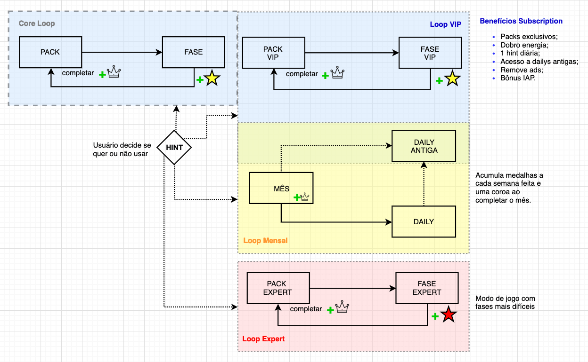

CONTEXT
Logic Pic is a nonogram puzzle, where you have to paint tiles in order to fill out grids and discover pixel art. I work as a System Game Designer for the game.
BRIEF
Many players were reaching the end of the game and not really consuming all of the content being presented to them. I was asked to work with the level progression and increase the consumption rates, without causing a downfall in retention.
PROCESS
At first, I decided to take a look at the game as a whole and understand its features. How everything was connected in a systematic way. Things didn't look so good and I made a hypothesis that one of our monetization problems came from the fact that the only thing that we sold, hints, were not mandatory to use and that players could just skip the levels they considered to be too hard.
Afterwards, I went on to analyze the data we had for the game as a way to search for some answers and see what I could find. I checked how many players were reaching each level, and especially how were the win and churn rate for those levels. Levels that had high churn rates, had lower win rates but didn't represent a decrease in retention, which proved the point mentioned before. That the players were just skipping the hard levels and playing the easier ones.
With this in mind, I decided to look at some other metrics, such as the average and median time spent on levels; hints used per level; solver (our difficulty measurement tool); grid size and such. I was searching for the strongest correlation to base the new level progression of the game on.
I wanted to create a learning experience at the beginning of the game so that players would keep the game regardless of the levels being a little harder. I was also looking to get a sort of sine wave for the difficulty of the levels throughout the themed based packs.
Once I checked all the correlations I decided to go with one based on the time, and the solver. Since players were gonna have to play level-by-level I thought it wouldn't be a good experience to face two lengthy levels one after the other. I removed some of the levels in the game because they had outliers metrics that would hurt the player experience and might affect retention negatively.
Final Outcome
We did an AB test to check some possibilities and decided to implement a full linear progression on the game, in which the players have to beat the previous level in order to unlock the next one. This lead to an increase in revenue of nearly 10%, since now players weren't skipping the hard levels and were actually using hints to beat them.
Available on Google Play and on the App Store